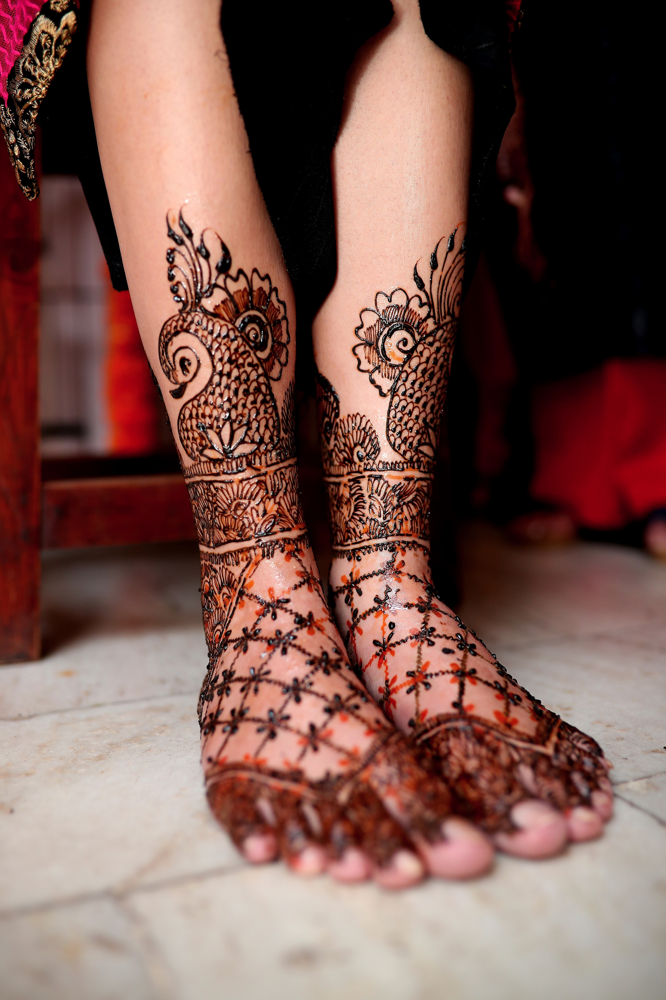

The Ultimate Tattoo
Featured Tattoos
Floral
A floral tattoo can be delicate and feminine or bold and vibrant, depending on the flowers you choose.

Geometric Shapes
A design with clean lines and geometric shapes can be a striking and modern tattoo design

Tribal
This style is characterized by bold black lines and abstract designs, often inspired by traditional tribal art from around the world.

Watercolor
A watercolor tattoo is a more whimsical and playful option, with soft, blended colors and a painterly feel.
Tattoo Care
After getting a tattoo, it's important to take proper care of it to ensure that it heals properly and looks great for years to come. Here are some tips for tattoo care:
- Leave the bandage on for at least a few hours after getting the tattoo, or as recommended by your tattoo artist.
- Wash the tattoo gently with warm water and unscented soap 2-3 times per day for the first week.
- Apply a thin layer of unscented, white lotion or ointment to the tattoo 2-3 times per day for the first few days.
- Avoid swimming, soaking in water, and exposing the tattoo to direct sunlight for at least 2 weeks.
- Avoid picking at scabs or scratching the tattoo as it heals.
- If you experience any unusual swelling, redness, or pain, consult a medical professional.
Remember that every tattoo is unique and may require different care instructions,
so always follow the advice of your tattoo artist and consult a medical professional if you have any concerns.
Artist Bios

Leandro Lima
Leandro Lima is a renowned tattoo artist with over 10 years of experience in the industry. Specializing in black and grey realism, Leandro Lima's work has been featured in numerous magazines and exhibitions.

Antori Shakraba
With a background in fine art, Antori Shakraba brings a unique perspective to tattooing. Known for their intricate and colorful designs, Antori Shakraba has gained a loyal following of clients who appreciate their attention to detail.
Athena Soul
As a self-taught tattoo artist, Athena Soul has developed a signature style that combines traditional and modern elements. Their bold and graphic designs have won them numerous awards and recognition in the industry.
Tattoo History
Tattoos have a rich and diverse history that spans cultures and time periods. The oldest known tattoo was discovered on the body of Ötzi the Iceman, a 5,300-year-old mummy found in the Italian Alps. Ötzi's body was covered in 61 tattoos, consisting of lines and dots, which were likely used for medicinal purposes.
Throughout history, tattoos have been used for a variety of purposes. In ancient Egypt, tattoos were used to identify slaves and servants. In Japan, tattoos were used to mark criminals and outcasts. In Polynesia, tattoos were seen as a symbol of strength and were used to mark important life events.
In the Western world, tattoos were once associated with sailors, bikers, and other fringe groups. However, in recent years, tattoos have become increasingly mainstream and are now considered a popular form of self-expression.
Today, tattoos come in a variety of styles and designs, and are created using modern techniques and equipment. Whether you are looking to express your individuality or commemorate a special event or person, tattoos continue to be a popular and meaningful form of body art.